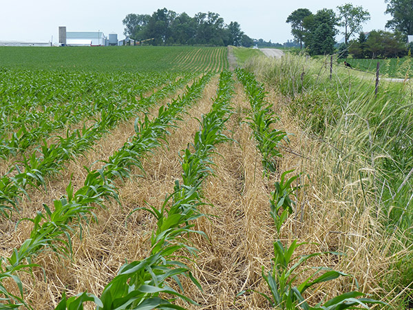

Find us on Twitter
Find us on TwitterCover Crops
|  |
| Sustainable Corn Project research is showing that a winter rye cover crop can be beneficial in wet and dry times. This photo was taken in eastern Iowa, June 2014, by Charles Wittman. |
 |
Winter rye at a field test site at Iowa State University, October 2013, by Chad Ingels |
Winter cover crops, grown during the fallow season of the corn and soybean crops, can provide many benefits for soil and water quality and crop production. Cover crops may increase the resilience of corn-based cropping systems to weather variability as well as reduce the carbon and nitrogen loss from these cropping systems. The cover crops actively grow and take up nutrients that would otherwise be subject to loss through leaching and surface runoff. Surface cover provided by cover crops in the spring can reduce soil loss and maintain and build soil quality.
This project is evaluating rye cover crops in a corn-soybean rotation.
Resources:
|
|
Dr. Eileen J. Kladivko, Professor, Purdue University, discusses the potential benefits of cover crops. This presentation was made at this project's 2012 annual meeting. |
| Midwest Cover Crops Council Selector Tool http://www.mccc.msu.edu/selectorINTRO.html |
| Managing Cover Crops Profitably http://www.mccc.msu.edu/documents/ManagingCCProfitably.pdf |
| Cover Crops Following the Summer 2012 Drought https://ag.purdue.edu/agry/extension/Documents/CoverCropsFollowingDrought.pdf |
| Cover Crops for Nitrogen Management http://www3.ag.purdue.edu/agry/extension/Documents/CoverCropsNitrogen.pdf |
| Nutrient Reduction Strategies... Matthew Helmers, associate professor of agriculture and biosystems engineering at Iowa State University, discusses how the Iowa Nutrient Reduction Strategy provides an opportunity for increasing cover crops. Sustainable Corn YouTube Channel |
| Cover Crop Selection & Management Parts 1, 2 & 3... Tom Kaspar, National Lab for Agriculture & the Environment, discusses how to select and manage cover crops for corn-based cropping systems in the upper Midwest. Sustainable Corn YouTube Channel |
| Plot Design Options for On-Farm Cover Crop Trials... Mark Licht, Iowa State University Extension field agronomist, discusses strategies for planning, implementing and testing cover crops. Sustainable Corn YouTube Channel Handout-1, Handout2 |